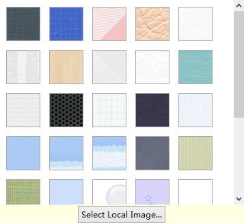
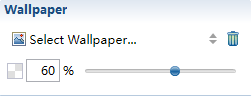

壁紙
壁紙は、マインド マップの外観をカスタマイズするために使用する背景画像です。既存の壁紙を使用したり、独自の画像をインポートできます。
壁紙をマップに追加:- マップを選択し、プロパティビューを開きます。
- 「壁紙を選択します...」をクリックし、ダイアログ ボックスで壁紙を選択します。
- もしくは、[ローカル画像を選択します...]をクリックし、ローカルファイルディレクトリから自分の画像データを選択します。
壁紙リストダイアログ ボックス

- マップを選択し、プロパティ ビュー開きます。
- プロパティビューの削除アイコンをクリックして、現在の壁紙を削除します。
- 壁紙の不透明度を、数値を入力するかスライダーを移動して変更します。
